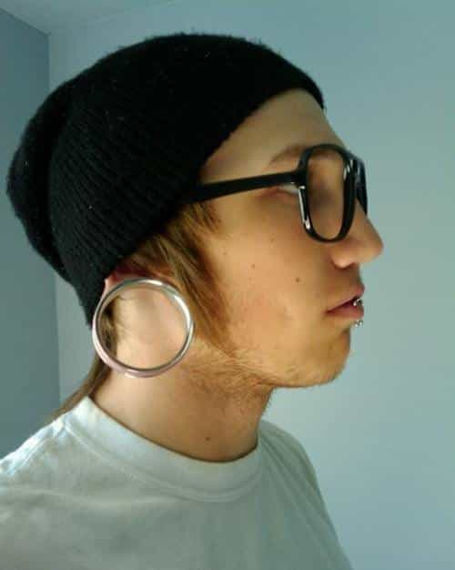

The human body is a work of art. However, since antiquity people have tampered with it. Sometimes it was for fashion, and sometimes to mark criminals and slaves. Today’s efforts are pretty dreadful.
Tattoos

Res ipse loquitur.
In times past, tattoos were pretty rare. For the most part, that was for sailors, truckers, bikers, and circus people. A woman with tattoos might be a hooker, or at least someone you wouldn’t introduce to Mom. These days, it’s pretty common to see people inked up nearly as much as Yakuza gangsters or South Seas islanders.
Why this is bad: Tattoos are forever. If you change your mind, tough. One of my exes (Stripper One) tried to get a simple tattoo lasered off, an expensive procedure. It left bright red scars, and the guy didn’t even finish the job. Stripper Two got a tramp stamp of her ex’s name, someone she now surprisingly hates. That made the doggy style position a rather surreal experience.
Summary: Surely I’m sounding like an old fogey here. Fine, I’m guilty as charged. I won’t say never ever get inked, but please, be judicious. Don’t put a picture on your body if it’s not artistically good enough for your living room wall, okay?
Piercings

Critical failure on OSI Layer 8
Delving further into strange territory, body piercings became a fad in the Victorian demi-monde. However, after that, women (with the exception of Gypsies) seldom pierced their ears until the 1960s. Piercing anything else was pretty much unthinkable. Then, body piercing got revived by the California gay leather BDSM scene back in the 1970s. During the 1980s, guys started piercing their ears too.
Later in the decade, a few celebrities got navel rings, and it was all downhill from there. Then the new vogue was inserting ironmongery into lips, eyebrows, nipples, the junk, and even the perineum (you don’t want to know).
One time, I talked a seventeen year old girl out of getting a facial piercing, one that would’ve looked particularly awful. Since she’s from a devout Jewish family, I saved her from committing a sin, one that would’ve marked her as a real weirdo among her community. Let nobody say I’m incapable of a good deed.
Why this is bad: While healing, piercings must be cleaned regularly, typically with a medical-grade iodine solution. Even so, problems can still happen; here’s one of the horror stories I know. One of my exes got her navel pierced, against my advice. Before long, she got a wicked infection. When the rash had spread across her belly, from the sternum to the bush, she got the hint and took the thing out. As I remind my girlfriends, “Mussolini is always right!”
Summary: For women, ear piercings are tolerable but pointless. In India (only), nose piercings work—it’s their culture—but I still don’t get it. Regarding anything else, it’s not going to enhance any babe’s beauty, but it sure as hell can detract from it. As for guys, if you’re tempted to put holes in yourself that don’t belong, then be like Amy Winehouse and say “No, no, no!”
Larger holes

The problem glasses are the first mistake.
Hipsters quite frequently get ear gauges. With time, they can be stretched wide enough to fit a hand through them. Is it to be different like all their friends, or do they need a place to hang clothes? Occasionally they’ll do this to their noses too, a reminder to the rest of us that the Apocalypse is nigh.
More rarely, someone will inflict this horror on his/her/its mouth. Perhaps East African lip plates will one day be the next big thing. (Some tribes started that to discourage Arab slave traders from capturing them, but you’ll never hear about that in your history class.) As we’ll soon see, just about everything else anyone can imagine to ruin their appearance has already been tried.
Why this is bad: There are ways to conceal tattoos and piercings, but big holes are a career-limiting move. Worse, it requires surgery to correct this mistake.
Summary: No. Just no.
Below the skin
For the really ambitious, there are other options, such as beads or spikes emerging from the head. Those Borg implants are secured using a subcutaneous doohickey similar to a drywall spreader. Objects also can be implanted fully beneath the skin, sort of like having a permanent Klingon forehead.
Why this is bad: There’s more than the ugly factor to consider. Since most shops doing body modification will usually refuse to do things like this, some people perform surgery on themselves. There are even websites encouraging this, with instructions. I hate to burst anyone’s bubble, but surgery is for doctors; they have years of training and know what they’re doing.
Summary: Since the most comparable things are Borg implants and Klingon tire tracks, it’s clear that this stuff makes people look like aliens. What a way to display taste and sophistication!
The really weird stuff
Yes, the banana split is metaphorical.
The final category is not for the faint of heart, making all the above seem pretty tame. Skip the following if you’re hungry; you’ve been warned.
Some examples I’ve heard about include repositioning the nail cuticle further back on one’s fingers (why—just WHY?), injecting saline into the scrotum (artificial bravery?), castration, splitting the tongue in half, splitting the dick in half, and that ain’t all.
Why this is bad: Those who don’t understand are beyond the point of reason.
Summary: Those who like this stuff should start with castration first. This will help cleanse the gene pool, which needs a stiff dose of chlorine.
Et enfin
The human body in its natural form looks fine as is; all that’s necessary is good hygiene and staying in shape. We should respect our bodies; they’re the only ones we have. I could go on a political tangent and wax eloquently about how the “everything normal sucks” meme is making the world uglier, but hopefully you get the picture.
Read More: Tattoos Are Not Artistic, Unique, Or Rebellious